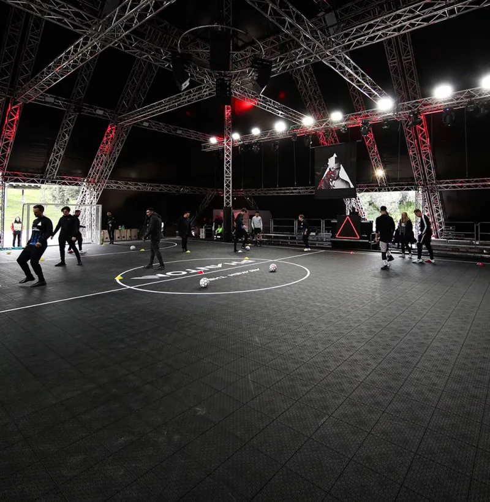
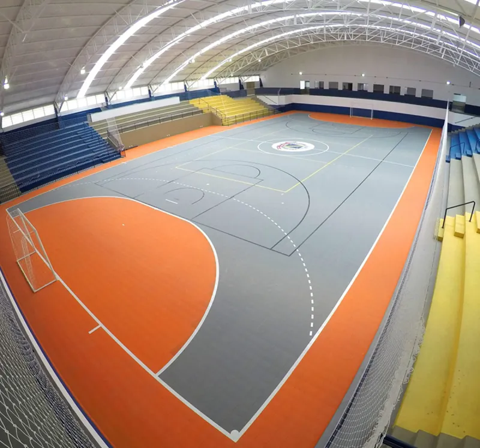
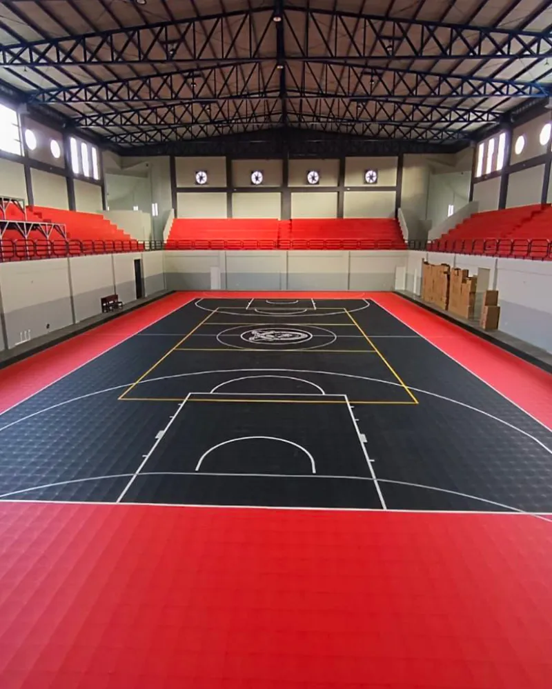

Projects
Gallery of our halls





Professional sports flooring for halls and gymnasiums. Installation over existing parquet in 1-2 days — with no downtime for the facility.
Worn-out parquet in your gymnasium? Old flooring in your sports hall? NS Pro is an indoor surface system installed directly over the existing base — no ripping out, no dust, no weeks of downtime. Refurbishment over a weekend and on Monday the children come back to PE lessons on a new, safe surface.
The multi-layer construction provides professional shock absorption protecting joints and spine, consistent ball bounce and the right grip for dynamic changes of direction. Basketball, volleyball, handball, futsal, badminton, floorball — all on one surface. Chosen by hundreds of schools, municipalities and sports clubs across Europe.
A uniform, resilient structure delivers predictable and dynamic ball bounce — key in team sports. Parameters compliant with FIBA, FIVB and FIH standards.
The multi-layer system provides professional shock absorption, reducing strain on joints and spine. Fewer injuries, longer sporting careers.
The non-slip top layer ensures stability even during sudden changes of direction, sprints and stops. Safe, dynamic play.
System installed directly over old parquet or concrete. No ripping out, no dust, no weeks of downtime. Gymnasium ready in 1-2 days.
Resistance to intensive use, abrasion, dents from sports equipment and chairs during events. Full lifecycle without replacement.
Smooth, non-porous surface prevents build-up of dirt and bacteria. Cleaning with standard products. Ideal for school facilities.
Gymnasium refurbishment. Child safety, joint protection, long-term durability.
Multipurpose courts for clubs. Dynamic play, professional parameters, FIBA/FIVB documentation.
Dedicated surfaces for futsal. Perfect ball bounce, optimal grip, long lifespan.
Training comfort, shock absorption, easy cleaning. Group classes, yoga, strength, dance.


Get in touch for a free quote and an assessment of the existing floor. We will help plan the refurbishment without downtime for the facility.
Free quote